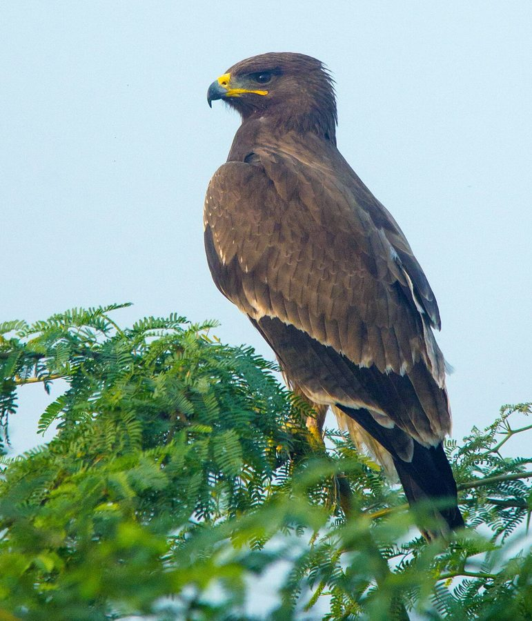

इंडियन स्पॉटेड ईगलIndian Spotted Eagle
Clanga hastata · Accipitridae · BRD-0153

- Scientific name वैज्ञानिक नाम
- Clanga hastata (Lesson, 1830)
- Family कुल
- Accipitridae
- Hindi हिंदी
- इंडियन स्पॉटेड ईगल
- Local names स्थानीय नाम
- indian spotted eagle, spotted eagle, chil, eagle
- Status here यहाँ की स्थिति
- native
- Movement आवागमन
- Resident, here all year
- IUCN IUCN
- VU
- Review समीक्षा
- audited and independently read
When to look कब देखें
Present all year. साल भर मौजूद।
Largely resident on the Indian subcontinent; some populations may show local movements. All migrants and visitors →
Uses and possibilities उपयोग और संभावनाएँ
Drawn from the documented uses in the profile below, where each is labelled traditional, current or a research lead. All uses →
Tell it apart from इनसे अलग पहचानें
इंडियन स्पॉटेड ईगल / Indian Spotted Eagle
Clanga hastata (Lesson, 1830) — Accipitridae
इंडियन स्पॉटेड ईगल — यह बाज़ मध्यम आकार का होता है, भूरे रंग का, सफेद धब्बों के साथ। यह जंगलों और खुले क्षेत्रों में पेड़ों से शिकार करता है। पूर्वी उत्तर प्रदेश में इसे दिखना दुर्लभ हो गया है। यह पक्षियों और गिलहरियों का शिकारी है और बहुत कुशल उड़ने वाला होता है।
Quick Identification त्वरित पहचान
| Feature | Description |
|---|---|
| Size | Medium eagle, 50–56 cm; wingspan 130–160 cm |
| Plumage | Dark brown above; buff or cream spots and streaks on crown, back, and coverts |
| Underparts | Buff-cream with dark streaking; lighter than upper parts |
| Flight feathers | Dark brown, visible in flight |
| Cere and legs | Yellow cere; yellow legs and feet |
| Eyes | Dark brown; fierce expression |
| Flight | Soaring and hunting flight; powerful wing beats; quick dives |
Field tip: In eastern UP, look for this medium-sized brown eagle with pale spots on the wings, perched in tall trees overlooking open country or forest edges. The pale underparts with streaking, combined with the spotted back, distinguish it from other raptors. Often seen at dawn and dusk hunting over clearings and forest edges.
हिंदी — कैसे पहचानें:
भूरा बाज़, सफेद धब्बे।
पेड़ की ऊँची शाखा पर बैठता है।
तेजी से शिकार करता है।
Morphology आकारिकी
Biometrics:
| Measurement | Range |
|---|---|
| Total length | 500–560 mm |
| Wingspan | 1300–1600 mm |
| Wing (flattened chord) | 370–420 mm |
| Tail | 200–240 mm |
| Tarsus | 45–55 mm |
| Bill (culmen from base) | 22–28 mm |
| Weight | 1.3–1.8 kg |
Plumage: Head and upper back dark brown. Crown, nape, and back with buff-cream or white spots and streaks. Wing coverts brown with pale spotting. Flight feathers dark brown. Underparts buff-cream with dark streaking. Underwings paler than upper wings. Tail brown with faint barring.
Head: Moderate crest sometimes visible when alert. Eyes large and dark. Facial disc not prominent.
Bill: Hooked, powerful, pale yellow at base; dark at tip.
Cere: Pale yellow to greenish-yellow.
Legs: Long, powerful, yellow; equipped with long talons for gripping prey.
Sexes: Females larger than males; slight plumage differences.
Juveniles: Darker overall; less spotting; pale supercilium; spot pattern develops with age.
Vocalisations
Largely silent; calls given during breeding and alarm situations:
- Call: A high-pitched yelp or kee-kee-kee given in alarm or territorial display.
- Hunting call: Harsh calls during prey pursuit.
- Silent flight: Usually silent during soaring and hunting flight.
हिंदी: ज़्यादातर शांत रहता है; शिकार के समय तीव्र आवाज़।
Behaviour & Ecology व्यवहार और पारिस्थितिकी
Specialist predator: The Indian Spotted Eagle is a specialist predator on birds and small mammals:
- Birds (particularly doves, mynas, partridges)
- Tree squirrels and ground squirrels
- Small reptiles
- Occasionally young rabbits
Hunting technique: Perch hunts from tall trees overlooking clearings, forest edges, and open fields. Watches for movement, then dives at high speed to capture prey in talons. Often hunts at dawn and dusk.
Habitat specialist: Prefers dry and moist deciduous forest, forest edges, and open woodlands with large trees. Found in areas with a mosaic of forest and cultivation.
Territorial: Maintains breeding territories; pairs defend areas vigorously.
Breeding: Monogamous; long-term pair bonds. Builds large stick nest in tall trees.
Resident: Largely resident year-round, though some local movements occur with seasonal changes.
Population decline: Global populations have declined significantly due to habitat loss, pesticide use (particularly in agricultural areas), and direct persecution.
हिंदी: जंगली क्षेत्रों में पेड़ों से शिकार करता है। अब बहुत दुर्लभ हो गया है।
Life Cycle / Phenology जीवन चक्र
Resident: Present year-round on suitable forest and semi-open habitat in eastern UP.
Breeding: December to April; nest building begins in November-December.
Nesting: Large stick nest built in tall trees (mango, neem, or forest trees); nest reused and added to annually. Nest diameter 1.5–2 m.
Eggs: Usually 1–2 white or pale bluish eggs; incubation approximately 38–40 days.
Nestling: Young remain in nest approximately 50–60 days; dependent on parents for food after fledging.
Fledging: May–June; juveniles remain with parents through monsoon.
Roosting: Perches in tall trees; may use specific traditional roost sites.
हिंदी: बसंत में अंडे देता है। एक या दो बच्चे।
Host Plants or Prey आहार
| Prey Type | Examples | Hunting Method |
|---|---|---|
| Birds | Doves, mynas, partridges | Dive from perch |
| Squirrels | Tree squirrels, ground squirrels | Pounce from perch or chase |
| Reptiles | Lizards, snakes (small) | Snatch from ground |
| Small mammals | Young rabbits, hares | Occasional |
हिंदी: मुख्य रूप से चिड़िया और गिलहरी का शिकार करता है।
Predators / Natural Enemies शत्रु
- Larger eagles and raptors: Occasionally preyed on by larger eagles (, for example)
- Crows and corvids: Mob and harass adult birds
- Humans: Habitat destruction, pesticide poisoning, direct persecution
- Nest predation: Crows, monitor lizards may predate eggs or young
हिंदी: मनुष्य इसका मुख्य शत्रु है — खेतों में डाले गए जहर से मर जाता है।
Agricultural / Human Relevance कृषि प्रासंगिकता
Protected species: Listed in Schedule I of the Wildlife (Protection) Act 1972, India. This is the highest protection level, affording absolute legal protection. Capture, injury, or killing is prohibited.
IUCN Vulnerable status: Classified as Vulnerable (VU) by the IUCN Red List due to habitat loss, pesticide poisoning (particularly organochlorine and neonicotinoid pesticides that bioaccumulate), and persecution. Population decline exceeds 30% over three generations (30 years).
Pesticide vulnerability: The species is particularly vulnerable to pesticide accumulation through its prey. Birds and squirrels that consume pesticide-treated seeds or insects bioaccumulate toxins, which are then transferred to the eagle through predation. This has caused population declines in agricultural regions.
Ecological role: As an apex predator, the Indian Spotted Eagle plays an important role in ecosystem balance by controlling populations of birds and small mammals.
Habitat dependence: The species is vulnerable to forest loss and fragmentation. It requires large territories with suitable nesting trees and open hunting habitat.
हिंदी: यह विधि अधिनियम 1972 की अनुसूची I के अंतर्गत संरक्षित है। दुर्लभ हो गया है।
Expected Locally स्थानीय रूप से अपेक्षित
Not a field record. Written from published accounts for eastern Uttar Pradesh. No confirmed local sighting yet — if you have seen it, that is what the atlas needs.
अभी तक स्थानीय पुष्टि नहीं। यह विवरण प्रकाशित स्रोतों से है, किसी अवलोकन से नहीं।
The Indian Spotted Eagle is expected as a rare resident in forested areas and forest edges of Basti and Ayodhya districts, particularly in areas such as Parvati Arga Bird Sanctuary. The species is now scarce across its former range in Uttar Pradesh due to habitat loss and pesticide use. Search for it perched in tall trees overlooking clearings and forest edges, particularly at dawn and dusk. The combination of medium size, dark brown plumage with pale spotting, and yellow legs is diagnostic. A first record for the atlas would be a clear photograph showing the spotted plumage and pale underparts, with date, location, and GPS coordinates.
हिंदी: पार्वती अर्घा पक्षी विहार के पास देख सकते हैं। जंगलों के किनारों पर पेड़ों में।
Distribution वितरण
Global range: Indian subcontinent, from the Himalayas through peninsular India. Monotypic species.
In India: Distributed across mainland India in suitable forest and semi-open habitat. Populations are patchily distributed and declining.
In Uttar Pradesh: Historically widespread in forested districts; now sparse to absent in much of the state.
In Basti district / eastern UP: Expected in forest areas and forest edges; recorded in the Parvati Arga region. Current population status uncertain; species is rare.
Research Questions शोध प्रश्न
- What is the current population size and distribution of Indian Spotted Eagles in Basti and Ayodhya districts?
- क्या पार्वती अर्घा पक्षी विहार में यह बाज़ अभी भी पाया जाता है? What is their breeding success rate?
- What levels of pesticide (organochlorines, neonicotinoids) are found in prey species and in the eagles themselves?
- How does pesticide use in agricultural areas adjacent to forests affect Indian Spotted Eagle populations?
- What are the minimum habitat requirements (forest patch size, nesting tree availability, hunting area) for maintaining viable populations?
- Do birds from the Parvati Arga population have documented movement patterns or home ranges?
Similar Species मिलती-जुलती प्रजातियाँ
| Species | How to distinguish | हिंदी | Field Rule | |
|---|---|---|---|---|
| [[greater_spotted_eagle\ | Greater Spotted Eagle]] (Clanga clanga) — winter visitor | Larger (65–72 cm); darker overall; less prominent spotting; winter visitor only | ग्रेटर स्पॉटेड ईगल | Greater Spotted Eagle is winter visitor (October–March); Indian Spotted Eagle is year-round resident. |
| Booted Eagle (Hieraaetus pennatus) — vagrant | Smaller; different plumage pattern; rufous or dark morph; prefers different habitat | बूटेड ईगल | Booted Eagle is smaller, rarer vagrant with different proportions. |
Field rule: Medium-sized brown eagle with pale spots on back and wing coverts, pale streaked underparts, and yellow legs. Year-round in forest edges. Medium size with distinctive spotting separates it from both larger and smaller raptors.
Taxonomy & Classification वर्गीकरण
Original description. Described by René Primevère Lesson in 1830. Type locality: India.
Subspecies. Monotypic — Clanga hastata hastata. No subspecies are recognised.
Family and order placement. Order Accipitriformes; family Accipitridae (eagles, hawks, vultures). The genus Clanga contains the steller's and spotted eagles.
Phylogenetic notes. Molecular studies confirm Clanga hastata as a distinct species within the genus, sister to the Greater Spotted Eagle (Clanga clanga) but with separate evolutionary history in South and Southeast Asia.
IUCN status rationale. Classified as Vulnerable (VU) due to:
- Habitat loss and forest fragmentation
- Pesticide poisoning through bioaccumulation
- Direct persecution in some areas
- Breeding success declines due to pesticide effects
Population decline exceeds 30% over three generations (30 years).
हिंदी: भारत की मूल निवासी चिड़िया है। विश्व स्तर पर दुर्बल (Vulnerable) है।
Photo Gallery फोटो गैलरी
No photos yet — add field photos to media/species/indian_spotted_eagle/ and run node scripts/sync_photos.js.
Wanted photos:
- Perched in tall tree
- In flight showing spotted plumage
- At nest
- Close-up of head and spotted back
- Soaring over forest edge
References संदर्भ
- Lesson, R.P. (1830). Traité d'Ornithologie. [Original description]
- Ali, S. & Ripley, S.D. (1987). Handbook of the Birds of India and Pakistan. Vol. 1. Oxford University Press, New Delhi.
- Grimmett, R., Inskipp, C. & Inskipp, T. (2011). Birds of the Indian Subcontinent. 2nd ed. Christopher Helm, London.
- BirdLife International (2024). Clanga hastata. IUCN Red List of Threatened Species. Ver. 2024. [Assessor: BirdLife International]
- Rasmussen, P.C. & Anderton, J.C. (2005). Birds of South Asia: The Ripley Guide. Smithsonian Institution, Washington DC.
- GBIF Occurrence Data — Clanga hastata, Uttar Pradesh (2010–2025).
Source file: species/fauna/birds/indian_spotted_eagle.md